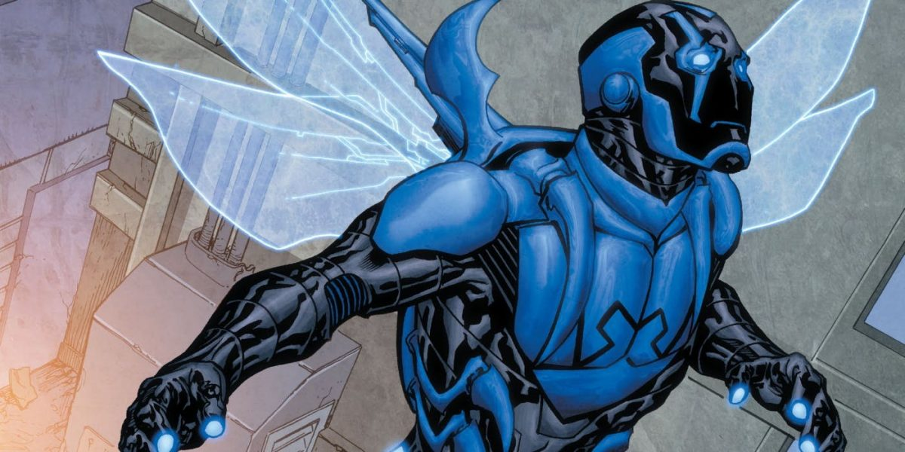
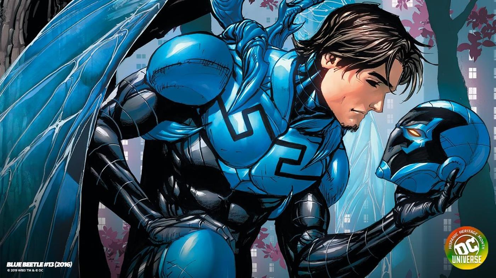

Blue Beetle'nin netflix uyarlaması geliyor
hepimiz bekliyorduk

Batman v Superman ile temellerini attığı DC sinematik evrenini genişletmeye devam eden Warner Bros, sayıları hızla artan DC uyarlamalarına bir yenisini daha ekliyor. Halihazırda birçok DC kahramanının filmleri için hazırlıklarını sürdüren Warner Bros, şimdi de Blue Beetle filmi için hazırlıklara başladı. The Wrap'in haberine göre Blue Beetle filmi için hazırlıklara başlayan Warner Bros, filmin senaryosunu kaleme alması için Meksikalı senarist Gareth Dunnet-Alcocer (Miss Bala) ile anlaştı. Blue Beetle filmi, gerçeğe dönüştüğü taktirde Latin Amerikalı bir süper kahramanın ana karakter olduğu ilk film olacak. Wonder Woman ile Marvel'in 10 yıldır yapamadığını yapıp bir kadın kahramanın bireysel filmini çeken Warner Bros, Blue Bettle ile de Latin Amerikalılar için aynı şeyi yapmayı planlıyor.

Çizgi romanlarda ilk olarak 2006 yılında yayımlanan Infinite Crisis #3'de boy gösteren Jaime Reyes, DC Comics'in son yıllarda çizgi romanlara eklediği karakterler arasında en popüler isimlerden biri. Daha önce Smallville ve Young Justice dizilerinde ufak rollerle izleyicilerin karşısına çıkan Reyes, şu ana kadar beyaz perdede hiç görünmedi. Sıradan bir genç olan Jaime Reyes, okuldan eve dönerken bulduğu mavi bir bok böceğinin omurgasına yapışıp tüm vücudunu bir zırh ile kaplaması ile özel güçlere kavuşuyor. Reyes'e insanüstü güç ve hız kazandıran bu zırh aynı zamanda genç kahramanın çeşitli silahlar, kalkanlar ve kanatlar oluşturmasını da sağlıyor.